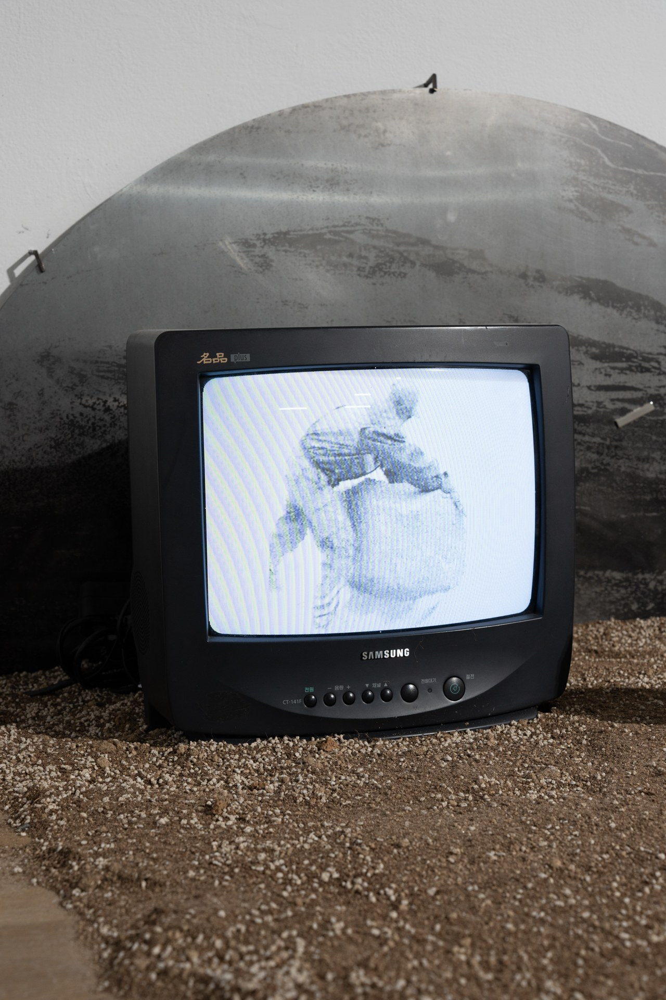

Highlights
안동권, <그대는 무엇이든 될 수 있다>, 2026, 단채널 비디오, 흑백, 사운드, 6분 44초
Highlights
안동권, <그대는 무엇이든 될 수 있다>, 2026, 단채널 비디오, 흑백, 사운드, 6분 44초
New
김민지, <한국인 만들기>, 2026, 6채널 비디오, 컬러, 무음, 루프

Rising
전아현, <Sisyphus' Light Ascent>, 2025, 단채널 비디오, 컬러, 무음, 루프
